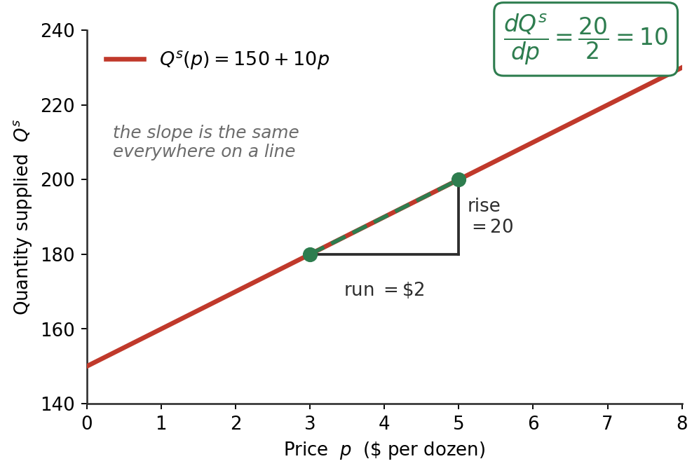

ECON 2316 • Microeconomic Theory
Math Refresher
Read the short section for a chapter before that lecture. Nothing here is new economics — it is the notation the lecture will assume you can read.
Dr. Richeng Piao
Department of Economics • Northeastern University
\(\dfrac{dy}{dx}\)
\(\dfrac{\partial Q}{\partial p}\)
\(\varepsilon\)
What do I need, and when?
Three short sections. Each covers only the notation its chapter actually asks you to use — click a card to jump.
Before Chapter 2
Marginal Thinking, Rules & Partials
What a derivative means, three rules for taking one, and solving for \(p^*\).
Before Chapter 3
Ratios, % Change, Elasticity & First-Order Conditions
Percentage change, a slope rescaled, and setting a derivative to zero to find the best price.
Before Chapter 4
Fractional Powers, Logs & the Chain Rule
Exponents like \(x^{1/3}\), logs that leave preferences unchanged, and the next rule.
Chapter 1 needs nothing from here. It uses the idea of a derivative but never asks you to compute one.
No integral section and no chain rule either — Chapters 1–3 use neither.
A derivative is marginal thinking
Before the rules, the idea. Three steps, and each is the last one sharpened.
1 · A ratio compares
\(\dfrac{\text{this}}{\text{that}}\)
Two numbers, divided, so you can say which is bigger and by how much.
2 · Marginal = one more
\(\dfrac{\Delta Q}{\Delta p}\)
A ratio of changes. How much quantity moves when the price moves — never the totals.
3 · Derivative = the limit
\(\dfrac{dQ}{dp}\)
The same ratio with the step shrunk to nothing. Exact, not approximate.
So every “marginal” in this course is a derivative — and the slope of a demand curve is one. Later chapters relabel it marginal cost, marginal revenue, marginal utility. One idea.
A partial derivative \(\left(\dfrac{\partial Q}{\partial p}\right)\) is the same thing with a promise attached: everything else is held still.
On a straight line, the slope never changes

Take the supply curve from Chapter 2. Between \$3 and \$5, quantity rises by 20. Rise over run is \(20/2 = 10\).
Pick any other pair of prices and you get 10 again. That is what “linear” means — one number describes the whole curve.
So \(\dfrac{dQ^{s}}{dp}=10\), and the three rules on the next slides are just a way of reading that 10 straight off \(150+10p\) without drawing a triangle.
The Constant Rule — a flat line has no slope
In general, if we have
\(f(x)=c \quad\Rightarrow\quad \dfrac{df(x)}{dx}=f'(x)=0\)
Example
\(Q^{s}=150\;\) (supply fixed at 150) so \(\;\dfrac{dQ^{s}}{dp}=0\)
the next rule
The Power Rule — bring the exponent down
In general, if we have
\(f(x)=c\,x^{\alpha} \quad\Rightarrow\quad f'(x)=c\,\alpha\,x^{\alpha-1}\)
Example
\(Q^{s}=10p\;\) so \(\;c=10,\ \alpha=1\), and \(\;\dfrac{dQ^{s}}{dp}=10\)
the next rule
The Sum Rule — one term at a time
In general, if we have
\(f(x)=g(x)\pm h(x) \quad\Rightarrow\quad f'(x)=g'(x)\pm h'(x)\)
Example
\(Q^{s}=150+10p\;\Rightarrow\;\dfrac{dQ^{s}}{dp}=0+10=10\)
the next rule
Partial derivatives: change one thing, freeze the rest
Quantity demanded depends on the price and on income, tastes, the price of substitutes… A partial derivative asks: what if only the price moves?
\[\frac{\partial Q^{d}}{\partial p}\ =\ \text{slide along the curve}\]
The curly \(\partial\) is the only difference from \(d\). It signals “other things held still.”
This is exactly the movement along vs. shift distinction, written as maths: \(\partial Q^{d}/\partial p\) moves you along; a change in anything else shifts the curve.
Math Refresher — What does a ratio mean?
A ratio is just a comparison of two numbers: how big is \(A\) relative to \(B\)? Write it \(A/B\) (read “\(A\) to \(B\)” or “\(A\) per \(B\)”).
The idea
\(\dfrac{A}{B} = 2\)
“\(A\) is twice \(B\).”
\(\dfrac{A}{B} = 0.5\)
“\(A\) is half of \(B\).”
\(\dfrac{A}{B} = 1\)
“\(A\) and \(B\) are equal.”
Apple \$1, water bottle \$2: ratio \(= 2/1 = 2\) — water is 2× the apple.
MBTA fare hike (July 2025)
New subway fare \(p_{\text{new}} = \$2.90\)
Old subway fare \(p_{\text{old}} = \$2.40\)
Ratio \(\dfrac{p_{\text{new}}}{p_{\text{old}}} = \dfrac{2.90}{2.40} \approx \mathbf{1.208}\)
“The new fare is 120.8% of the old fare” — or equivalently, “\$1.21 of new per \$1.00 of old.”
Order matters. \(2.90/2.40 = 1.208\) is “new per old.” Flipping it — \(2.40/2.90 \approx 0.828\) — says the old fare was 82.8% of the new. Same data, different ratio, different statement.
Math Refresher — Percentage change
\(\displaystyle \%\Delta = \frac{\text{new} - \text{old}}{\text{old}} \times 100\%\)
MBTA — continued
Numerator: \(p_{\text{new}} - p_{\text{old}} = 2.90 - 2.40 = \mathbf{\$0.50}\)
Denominator: \(p_{\text{old}} = \mathbf{\$2.40}\)
\(\%\Delta p = \dfrac{0.50}{2.40} \approx 0.2083 = \mathbf{+20.83\%}\)
(a price increase)
Why “old” in the denominator?
We want the change relative to the starting point — \$0.50 from \$2.40 is meaningfully different from \$0.50 from \$50.
Sign convention
\(\%\Delta > 0\) rise · \(\%\Delta < 0\) fall · \(\%\Delta = 0\) no change
Building block of elasticity: \(\;\varepsilon_D = \dfrac{\%\Delta Q}{\%\Delta p}\) — two percentage changes divided by each other.
First, the Two Numbers: \(\%\Delta p\) and \(\%\Delta Q\)
Each percentage change is \(\dfrac{\text{new} - \text{old}}{\text{old}}\). Same law of demand — watch the magnitudes.
Eggs — a necessity
| Price | \(\$2.50 \to \$4.90\) |
| Quantity | \(100 \to 98\) M dozen/wk |
\(\%\Delta p = \dfrac{4.90-2.50}{2.50} = \mathbf{+96\%}\)
\(\%\Delta Q = \dfrac{98-100}{100} = \mathbf{-2\%}\)
Dining out — a luxury
| Price | \(\$40 \to \$50\) |
| Quantity | \(200 \to 140\) meals/wk |
\(\%\Delta p = \dfrac{50-40}{40} = \mathbf{+25\%}\)
\(\%\Delta Q = \dfrac{140-200}{200} = \mathbf{-30\%}\)
Both obey the law of demand (\(p\uparrow \Rightarrow Q\downarrow\)). What differs is the magnitude of the quantity reaction — eggs barely budge (\(-2\%\)), dinners drop hard (\(-30\%\)).
Elasticity = a slope, rescaled
A slope answers “how many units?” An elasticity answers “what percent?” — the same information, made unit-free.
\[\varepsilon \;=\; \underbrace{\frac{dQ}{dp}}_{\text{the slope}}\times\underbrace{\frac{p}{Q}}_{\text{the rescaling}}\]
So elasticity is not the slope. It is the slope multiplied by where you are sitting on the curve — which is why it changes as you move along a straight line.
\(|\varepsilon|>1\) elastic — quantity reacts more than price
\(|\varepsilon|<1\) inelastic — quantity barely budges
Demand elasticity comes out negative — price up, quantity down. Ch 3 keeps the sign and takes the absolute value only when comparing sizes.
When two things move at once
A tax moves the buyer’s price and the seller’s price at the same time. To track a total change built from several partial ones, you add the pieces up:
\[dQ = \frac{\partial Q}{\partial p}\,dp \;+\; \frac{\partial Q}{\partial \alpha}\,d\alpha\]
“The total change equals each partial effect times how much that thing moved.”
Why Ch 3 needs it
It is what produces the tax-incidence formula — the split of a tax between buyer and seller, decided entirely by the two elasticities.
The Realistic Case: Slope That Changes
A real curve bends, so its slope differs at every point. A derivative is that slope at a single point — the rate of change right there.
Diminishing returns: steep early (slope ≈ 1), nearly flat later (slope ≈ 0) — no single number works.
Notation
Weight lost \(= f(\text{hours})\), i.e. \(y = f(x)\). Its derivative — how a change in \(x\) affects \(y\) — is written \(\dfrac{df(x)}{dx}\) or \(f'(x)\).

Calculus Corner 1.1 — First-Order Conditions
At any interior optimum of a smooth \(f\): \[ f'(x^{*}) = 0 \]
At the top of a smooth hill the tangent is flat. If \(f'(x^{*})>0\), move right and \(f\) rises; if \(f'(x^{*})<0\), move left — so the slope must be zero. The SOC sorts max from min: \(f''(x^{*})\le 0\) for a maximum.
In Chapter 3 — the revenue-maximising toll
A toll of \(P\) draws \(Q^d(P)=300{,}000-5{,}000P\) drivers, so revenue is one variable:
\(R(P)=300{,}000P-5{,}000P^{2}\)
FOC \(300{,}000-10{,}000P=0\Rightarrow P^{*}=\$30\)
SOC \(R''=-10{,}000<0\) ✓ a maximum.
Then \(Q=150{,}000\), \(R^{*}=\$4.5\)M/day, \(\varepsilon_D=-1\). Toolkit →

Fractional exponents, and logs that change nothing
Chapter 4's utility functions look like \(U = x_1^{1/3}x_2^{2/3}\). Two moves make them readable.
The power rule does not care
\[\frac{d}{dx}\left(x^{1/3}\right)=\tfrac13 x^{-2/3}\]
Bring the exponent down, subtract one — the same rule you used on \(10p\) and on \(t^{2}\). A third is just an awkward-looking number.
Logs turn products into sums
\[\ln\!\left(x_1^{1/3}x_2^{2/3}\right)=\tfrac13\ln x_1+\tfrac23\ln x_2\]
Much easier to differentiate — and because \(\ln\) only ever relabels utility, the choice it implies is unchanged.
That second point is the one to hold on to: a monotonic transformation rewrites the numbers without reordering the bundles. Same preferences, friendlier algebra.
The Chain Rule — a function inside a function
\(f(x)=g\big(h(x)\big) \;\Rightarrow\; f'(x)=g'\big(h(x)\big)\cdot h'(x)\)
Leibniz: \(y=g(u),\ u=h(x)\;\Rightarrow\;\dfrac{dy}{dx}=\dfrac{dy}{du}\cdot\dfrac{du}{dx}\) — outside derivative × inside derivative.
Plain example
\(f(x)=(2x+5)^{3}\)
\(u=2x+5,\;\;y=u^{3}\)
\(f'(x)=3(2x+5)^{2}\cdot 2 = 6(2x+5)^{2}\)
In Chapter 4 — why a log changes nothing
Take \(U=x_1x_2\) and relabel it \(V=\ln U\). The chain rule gives each partial an extra factor:
\(\dfrac{\partial V}{\partial x_i}=\underbrace{g'(U)}_{\text{the extra factor}}\cdot\dfrac{\partial U}{\partial x_i}\)
But the MRS is a ratio of two partials — so \(g'(U)\) appears top and bottom and cancels. Both give \(\mathrm{MRS}=x_2/x_1\). Same preferences, friendlier algebra.
Same trick gives any \(p^{*}(\alpha)\) in Ch 2. That's the toolkit — press → to continue.